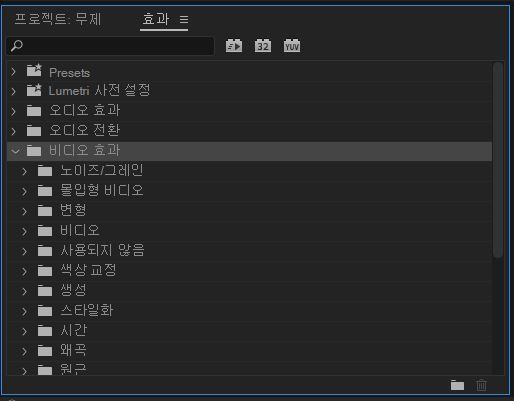
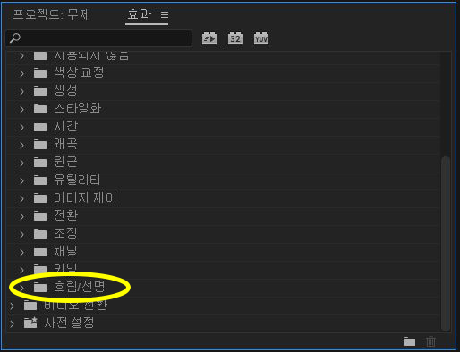
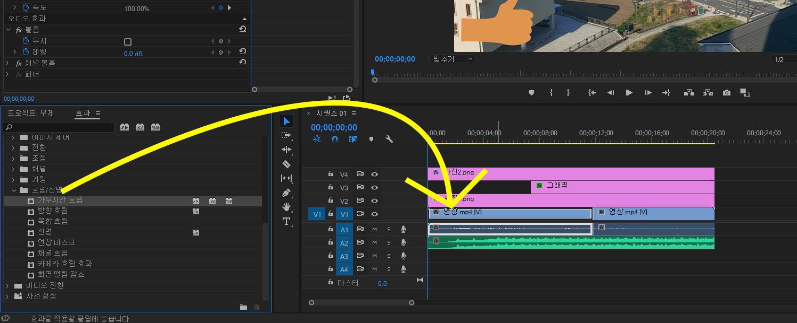
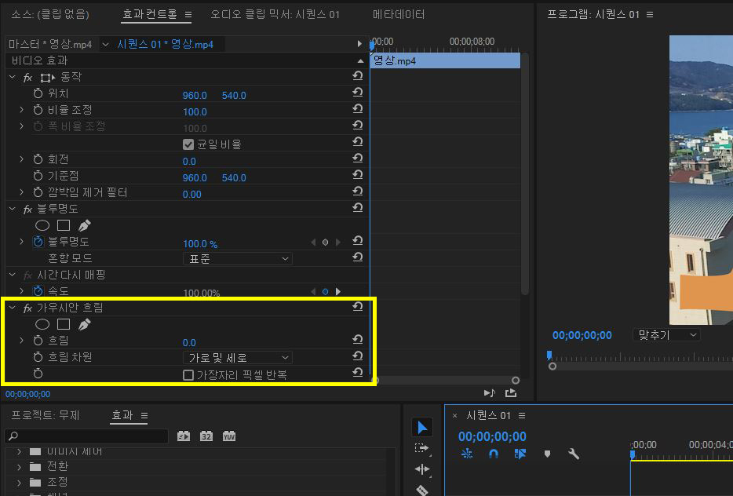

효과 창 이용해보기
이번에는 효과 창을 이용해봅시다.
프리미어에는 기본적으로 여러 효과들이 깔려있고
효과 창에서 그걸 꺼내 이용할 수 있습니다.
효과 창은 좌측 하단 프로젝트 창과 같이 있습니다.
만약 없다면

맨 위 '창' > '효과' 를 누르시면 나타납니다.

효과에는 이렇게 효과들이 준비되어있는데요.
전부 다 알아보는 것은 너무 힘들기 때문에
간단한 효과 한 개만 넣어 어떻게 사용하는지 예시를 보여드리겠습니다.
저는 그럼 비디오가 흐려지는 효과를 넣어보겠습니다.
'비디오 효과'를 누르면 그 안에 여러 효과들이 나타납니다.

그리고 맨 밑으로 내려가보면 '흐림/선명'이라는 것이 보일 겁니다.
이 것을 클릭해줍니다.

저는 여러 흐림 효과들 중에서 맨 위에 있는 가우시안 흐림을 넣어보겠습니다.
가우시안 흐림을 마우스로 꾹 누른 채 영상에 끌어다 넣어줍니다.

그런데 영상에는 아무런 변화가 없습니다.
그 이유는 효과 컨트롤에서 효과를 만져주어야 하기 때문입니다.
효과 컨트롤에 가면 가우시안 흐림이라는 부분이 생긴 걸 확인할 수 있습니다.

여기서 흐림 옆에 숫자를 올려주면

이렇게 화면에 흐림 효과가 적용이 됩니다.
효과 창을 이용하면 오디오나 비디오에 신기한 효과를 많이 넣을 수
있습니다.
그리고 효과들은 모두 효과 컨트롤에서 조정해주어야 사용이 가능합니다.